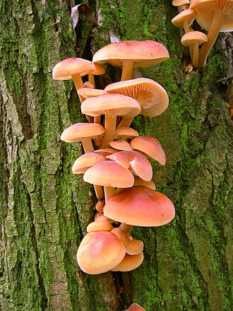

えのきたけ（えのき茸）の生産量 都道府県ランキング
1位から3位までと、とれた量
えのきたけが日本でいちばん多くとれるのは長野県です。8万418 tで、全国（13万215 t）の62%を占めます。

| 順位 | 都道府県 | 生産量 | 全国に占める割合 |
|---|---|---|---|
| 1位 | 長野県 | 8万418 t | 62% |
| 2位 | 新潟県 | 1万8,877 t | 14% |
| 3位 | 宮崎県 | 7,159 t | 5.5% |
この数字について
- 分類：きのこの仲間
- 全国の生産量：13万215 t
- この数字が表すもの：生産量（とれた重さ）
- 調査：特用林産基礎資料 令和7年
- 16県分を調査（調査していない県は順位に入りません）
えのきたけの生産量について、よくある質問
- えのきたけの生産量が日本一の都道府県はどこですか？
- 長野県です。特用林産基礎資料（令和7年）で8万418 tでした。
- えのきたけの生産量ランキング2位・3位はどこですか？
- 2位は新潟県（1万8,877 t）、3位は宮崎県（7,159 t）です。
- えのきたけの全国の生産量はどれくらいですか？
- 13万215 t（令和7年）です。